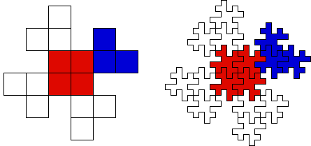

| In method 1 we observe the central region grows more rapidly than the boundary undulations. |
| To remove this effect, in the second method all parts grow at the same rate. |
| For comparison we will work with the shape of the previous example, but now we will think of the shape divided into subsquares, as seen on the left. |
|  |
| We use the shape divided into subsquares as a blueprint and follow its pattern replacing each subsquare with a suitably reduced original shape. |
| First notice the center of the shape consists of four subsquares, each of which is replaced by a reduced copy of the shape. |
| Next, each of the four arms consists of three subsquares, each of which is replaced by a reduced copy of the shape. |
| These 16 reduced copies of the shape are grouped to form a single object, and the process is iterated using this object. |
| The original shape tiles the plane, so also will each iterate, being made up of ever smaller copies of the original tile. |
| To see the limiting tile has a fractal boundary, recall the
area-perimeter relationship, by which we found the
limiting curve has dimension |
| Recall starting with the same tile, method 1 produced a tile with boundary
curve of dimension |
| Must this always be so? Are there configurations for which both methods give rise to the same tile? |
| A variation on this process could have given Escher an intersting idea. |
Return to Simple Fractal Tiles.